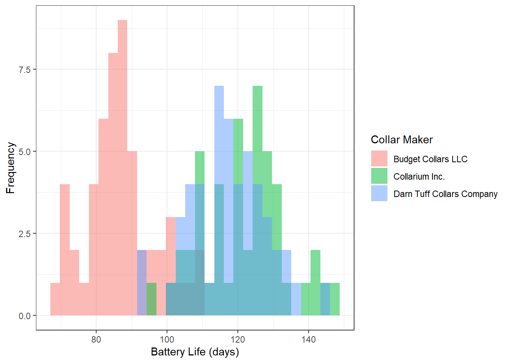
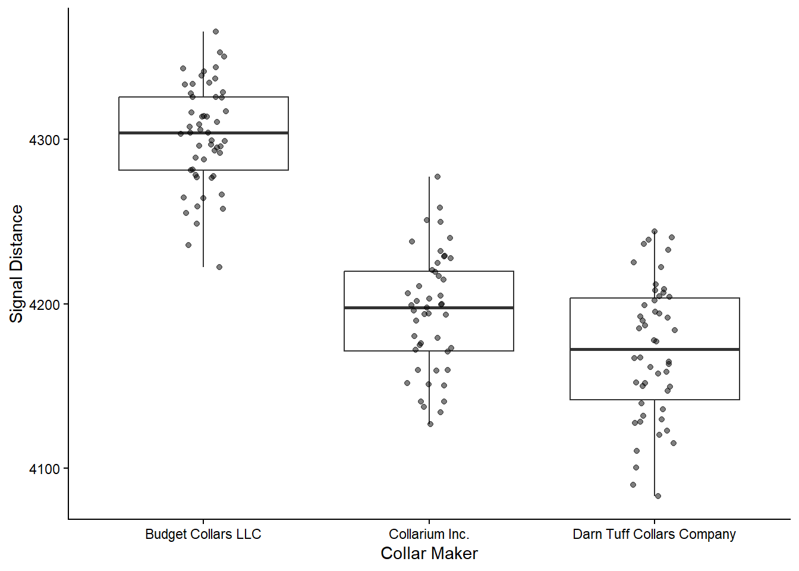

# Write your code here3.3: Comparing (Multiple) Means
Comparing (Multiple) Means
Learning Outcomes
- Students will be able to explain when to use an ANOVA versus a t-test.
- Students will be able to write null and alternative hypotheses for an ANOVA.
- Students will be able to run an ANOVA using
aov()and interpret the output. - Students will be able to run a Tukey HSD post hoc test and interpret pairwise comparisons.
So far in this module, we have discussed comparing the means of two groups in multiple ways: numerically, visually, and statistically. Specifically, we learned about running t-tests to statistically compare the means of two groups.
What if we have more than 2 groups, though? Often, we have 3, 4, 12…any number of groups that we might want to compare against each other. How do we do that?
ANOVA
What is an ANOVA? It stands for ANalysis Of VAriance.
Why is it called that? Well, ANOVAs compare the amount of variability in the data between and within groups. In plainer terms, it is looking at how different the data in each group are from each other (within) and also how different the groups are from the other groups (between).
The group of statistical tests called ANOVAs are extensions of the t-test, using the same concepts but allowing us to compare the means of more than two groups at a time. There are lots of different types of ANOVAs, but we are going to stick with the simplest version.
When to use an ANOVA
To run an ANOVA, the following things need to be true:
- The variable that we use to create our groups (independent variable) is qualitative (categorical).
- The variable that we want to compare between groups (dependent or response variable) is quantitative (numerical).
These two aspects above might sound familiar, because they also need to be true for t-tests!
- When we only have 2 groups to compare, we can use a t-test.
- When we have more than 2 groups to compare, we use an ANOVA.
Hypothesis Testing
Like t-tests, ANOVAs are another example of statistical hypothesis testing. We always want to formulate a null hypothesis and an alternative hypothesis. The generic version of these for any ANOVA are:
Null Hypothesis (\(H_{0}\)): The means of the populations we sampled from are all equal.
Alternative Hypothesis (\(H_{A}\)): The means of the populations we sampled from differ from each other.
Let’s Run an Example
In the previous lesson, we ran t-tests on the battery life and signal distance variables in order to determine if there was a statistically significant difference between two groups (the collar makers).
What if our large mammal team had deployed collars from three different companies rather than just two? How would we compare the means numerically, visually, and statistically? Let’s find out.
In small groups, work through the set-up, numeric, and visual sections.
Instructor Note: Plan for 15-20 minutes on the set-up, numeric, and visual sections before bringing the class back together for the ANOVA section.
Set-Up
First, as always, we need to load the tidyverse and the read in our collars data. This time, use the file more_collars.csv.
Answer:
library(tidyverse)
collars <- read_csv("data/more_collars.csv")Conceptual
What questions are we trying to answer about these collars?
- Does the battery life differ by collar maker?
- Does the signal distance differ by collar maker?
For each question, identify the independent and dependent variables, then write out the null and alternative hypotheses.
Answer:
Answers:
For both questions, the independent variable is the collar maker (categorical), and the dependent variable is the measurement being compared (battery life or signal distance), which is numeric.
For battery life:
Null hypothesis (\(H_{0}\)): There is no difference in the average battery life between the three collar makers.
Alternative hypothesis (\(H_{A}\)): There is a difference in the average battery life between the three collar makers.
For signal distance:
Null hypothesis (\(H_{0}\)): There is no difference in the average signal distance between the three collar makers.
Alternative hypothesis (\(H_{A}\)): There is a difference in the average signal distance between the three collar makers.
Numeric
Let’s calculate some summary values for our data to get some preliminary information about our collar companies.
Calculate the means and the standard deviations (sd()) for the battery life and the signal distance for each collar maker.
# Write your code hereAnswer:
summary_stats <- collars %>%
group_by(maker) %>%
summarise(mean_battery = mean(battery_life),
sd_battery = sd(battery_life),
mean_signal = mean(signal_distance),
sd_signal = sd(signal_distance))
summary_stats# A tibble: 3 × 5
maker mean_battery sd_battery mean_signal sd_signal
<chr> <dbl> <dbl> <dbl> <dbl>
1 Budget Collars LLC 86.8 9.64 4302. 31.4
2 Collarium Inc. 121. 11.8 4195. 35.8
3 Darn Tuff Collars Company 118. 10.7 4172. 41.4Let’s examine the data. Do you think the collar companies are all different from each other? Are there pairs of companies that look more similar?
Visual
As always, we love (<3) visualizing our data, especially as a form of data exploration and comparing means.
First, explore the distribution of battery life by maker using a multiple histogram (no need to add a line for the mean, but you can if you really want to!).
# Write your code hereAnswer:
ggplot(collars, aes(battery_life, fill = maker)) +
geom_histogram(alpha = 0.5, position = "identity") +
labs(x = "Battery Life (days)",
y = "Frequency",
fill = "Collar Maker") +
theme_bw()`stat_bin()` using `bins = 30`. Pick better value `binwidth`.
Now let’s do a different type of visualization for signal distance. What type of data visualization have we covered that does a good job of showing both central tendency (median, in this case) and the spread of the data (the middle 50% and the overall range) in one continuous variable?
# Write your code hereAnswer:
ggplot(collars, aes(maker, signal_distance)) +
geom_boxplot() +
geom_jitter(width = 0.1, alpha = 0.5) +
labs(x = "Collar Maker",
y = "Signal Distance") +
theme_classic()
Based on the numbers and your visualizations, what is your prediction? Are the 3 groups different enough, whatever that means?
Instructor Note: Accept any reasonable prediction here. The goal is to get students thinking about statistical vs. practical significance before running the test. Revisit their predictions after the ANOVA results are in.
Statistic
Now that we have explored the data numerically and visually, let’s interrogate the data statistically.
To run an ANOVA, we use the aov() function. Some helpful tips about the aov() function:
- unlike the
t.test()function, the initial output for theaov()function isn’t particularly helpful. We will want to save it to an object and then look at it using thesummary()function - like
t.test(), the syntax foraov()isdependent ~ independent.
First, let’s run an ANOVA on the battery life variable.
battery_model <- aov(data = collars, battery_life ~ maker)
summary(battery_model) Df Sum Sq Mean Sq F value Pr(>F)
maker 2 36919 18460 161.2 <2e-16 ***
Residuals 147 16828 114
---
Signif. codes: 0 '***' 0.001 '**' 0.01 '*' 0.05 '.' 0.1 ' ' 1For us, our main focus here in the ANOVA summary is on the maker row. We can ignore the Residuals.
We want to pay attention to the following:
F-value: this is our test statistic. It determines ourp-value(you don’t need to know how)Pr(>F): this is ourp-value, which has roughly the same meaning as with a t-test.- We want to know if this value is larger or smaller than our cut-off value. We will stick with 0.05.
- The notation here,
Pr(>F), is saying “What is the probability of us getting an F-value larger than the one we have by chance alone?” If that probability is less than 0.05 (or 5%), then we reject the null hypothesis that the means are the same.
***: the asterisks are reiterating what the p-value tells us, indicating just how small the p-value is.
What is our conclusion? Are these means different?
Practice
How about for signal distance? What is your interpretation of these results?
# Write your code hereAnswer:
signal_model <- aov(data = collars, signal_distance ~ maker)
summary(signal_model) Df Sum Sq Mean Sq F value Pr(>F)
maker 2 499547 249773 189.1 <2e-16 ***
Residuals 147 194137 1321
---
Signif. codes: 0 '***' 0.001 '**' 0.01 '*' 0.05 '.' 0.1 ' ' 1Instructor Note: The result should also be significant. Ask students to state a conclusion in plain language before moving to pairwise comparisons.
Pairwise Comparisons
ANOVAs are incredibly useful to tell you if there is a difference in the means of any of the groups. However, they do not tell you which means differ from another.
To figure that out, you need to use a class of tests called “post hoc tests,” meaning “after the event.” Post hoc tests take into account the fact that we are running multiple pairwise comparisons, which unfortunately increases our chance of error. To account for this, we need to adjust our p-values based on the number of pairwise comparisons we run.
The most common post hoc test for these pairwise comparisons is TukeyHSD(), but there are others depending on the specifics of your data set. You don’t need to worry about understanding the nuances of Tukey’s test, but you should know how to run the code and interpret it.
TukeyHSD(battery_model) Tukey multiple comparisons of means
95% family-wise confidence level
Fit: aov(formula = battery_life ~ maker, data = collars)
$maker
diff lwr upr
Collarium Inc.-Budget Collars LLC 34.667433 29.591701 39.743164
Darn Tuff Collars Company-Budget Collars LLC 30.765879 25.771504 35.760254
Darn Tuff Collars Company-Collarium Inc. -3.901553 -9.048355 1.245248
p adj
Collarium Inc.-Budget Collars LLC 0.0000000
Darn Tuff Collars Company-Budget Collars LLC 0.0000000
Darn Tuff Collars Company-Collarium Inc. 0.1748636What do these different columns represent?
diff: the difference in the means for that pairlwr: the lower end of the 95% confidence intervalupr: the upper end of the 95% confidence intervalp adj: the adjusted p-value for that pair. We interpret it as normal.
How should we interpret these results?
- Are Collarium and Budget significantly different in battery life?
- Are Darn Tuff and Budget significantly different in battery life?
- Are Darn Tuff and Collarium significantly different in battery life?
Answers:
- Collarium vs. Budget: Yes (p < 0.05)
- Darn Tuff vs. Budget: Yes (p < 0.05)
- Darn Tuff vs. Collarium: No (p > 0.05)
Practice
In your groups, run the Tukey’s HSD test for signal distance and interpret the results.
# Write your code hereHow should we interpret these results?
- Are Collarium and Budget significantly different in signal distance?
- Are Darn Tuff and Budget significantly different in signal distance?
- Are Darn Tuff and Collarium significantly different in signal distance?
Answers:
TukeyHSD(signal_model) Tukey multiple comparisons of means
95% family-wise confidence level
Fit: aov(formula = signal_distance ~ maker, data = collars)
$maker
diff lwr upr
Collarium Inc.-Budget Collars LLC -107.25643 -124.49632 -90.01655
Darn Tuff Collars Company-Budget Collars LLC -130.34487 -147.30843 -113.38132
Darn Tuff Collars Company-Collarium Inc. -23.08844 -40.56972 -5.60716
p adj
Collarium Inc.-Budget Collars LLC 0.000000
Darn Tuff Collars Company-Budget Collars LLC 0.000000
Darn Tuff Collars Company-Collarium Inc. 0.005997- Collarium vs. Budget: Yes (p < 0.05)
- Darn Tuff vs. Budget: Yes (p < 0.05)
- Darn Tuff vs. Collarium: Yes (p < 0.05)
Instructor Note: Unlike battery life, all three makers differ significantly in signal distance. This means every pairwise combination is statistically different, no two makers are comparable in terms of signal range.